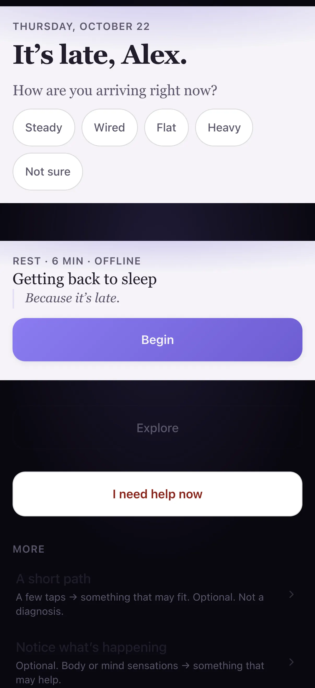

Fictional example Fictional people and story. Screenshots and video are from the real app, with sample data labeled for this persona — not a live customer account.
SoulCap · Berlin, Germany
How Tom ends loud days quietly
Tom consults across time zones. Phone for a short wind-down on the U-Bahn, laptop for evening reflection, tablet on the sofa.
“The day can stop without a scroll hole.”

Before and after
Made-up numbers for a fictional week — not a real customer case.
Before
After SoulCap
A fictional day with Tom
Sample screens for the story — not a recorded real session.
-
Commute breath
On the U-Bahn Tom runs a short physiological sigh on his phone between stations — meetings still echoing, scroll hole deferred.
-
Sofa tablet
On the sofa the iPad opens Calm tools without autoplay noise; he picks one reset and leaves the rest alone.
-
Laptop reflection
Three lines of reflection on the laptop, then the lid closes. The day is allowed to stop.
-
Phone away
Last phone check confirms help is listed, then Do Not Disturb. Berlin can wait until morning.
Watch it
A day across devices — silent walkthrough with captions. No autoplay with sound.
Read transcript
Tom winds down across phone, iPad, and laptop. Fictional Berlin evening.
Features Tom uses
Fictional people and story. Screenshots and video are from the real app, with sample data labeled for this persona — not a live customer account.